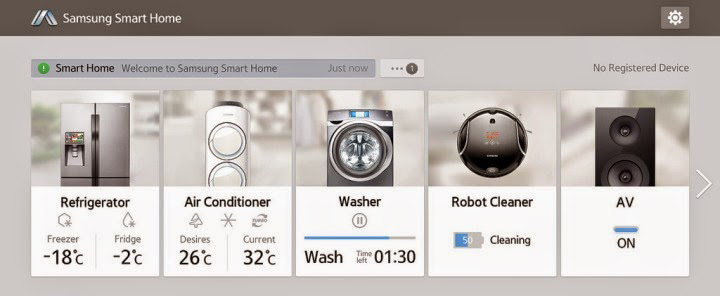

Dec'16 - April'17 | Individual Capstone Project
Why: Mending broken interaction between devices and services through IOT.We interact with a lot of devices and services on daily basis. But, the interaction between them is broken. Most often the apps are not connected to each other and they work individually rather than working together in an ecosystem.
Intel claims that, on an average, we will be interacting with 26 smart devices per day by 2020. That is a lot of smart devices that we will be interacting with, in a short span of a day. Given the rise the number of the devices is inevitable, how can we make sure that the interactions with these devices is seamless and ubiquitous? How do we make sure that these devices work for user and not become a burden/ unnecessary complication?
Most of the smart home apps are just a list of all devices that user can interact with. Additionally, how can user's interact with public smart device like in office or city.Most of the “connectivity” problems emerge because we are using same interaction model for the IOT era as defined for the mobile era. I believe that, we should re-think our current interaction models of using apps, notification etc for interacting with smart devices.
IOT is still an upcoming field so there are not many users of IOT devices making it difficult to identify the problems with these devices. So, I did a diary study to identify “friction” in their everyday interaction with devices and also identify some interactions that were perceived “seamless” by the users.
In the diary entry study, seven different users were instructed to describe three things for a day-
Users described a lot of different situations like when they were at home, travelling or at work. From these situations, context of work came out more prominently as the users interacted with more objects in a work environment. This was also substantiated by the secondary research wherein the impact of IOT was more prominent at work than home.
Users faced trouble interacting when a task was spread across multiple devices/ objects.
Example, one user described that the switch for lights were located on opposite corner of the room, far from the actual light. Additionally, there are multiple switches next to each other so they usually try out different switch before they are able to turn on the right switch.
The vision is to make interactions truly ubiquitous i.e. all the devices should be so connected that the users doesn’t feel that they are using multiple devices. There shouldn’t be any gaps or speed bumps while interacting with connected yet disparate devices.
Simple problem of light-switch led to an important insight i.e. interaction should happen where the object is. Context is defined by proximity between user and object. The core idea is that users should be able to just walk up to the devices and use them without having to worry about different knobs and switches. For-example, imagine if you can just walk up to any printer and print by just a single tap. No more fiddling around to connect the printer with laptop, mobile, etc.
Since, I am trying to design a different kind of experience and interaction for the users, I wanted to understand how users will react to it. Do they welcome an interaction like this or is this something that deem irrelevant, unnecessary feature? Video prototype is a good method to communicate and test the experience of interacting with the connected device. Thus, I created the video prototypes. The prototypes triggered a lot of interests, ideas as well as questions among users. Example, what happens when multiple objects are in range? Who gets the control if multiple people are in proximity?
I am working on a holistic different scenario and use case based on the feedback on first prototype. For the next iteration, I am developing an interactive prototype using arduino, Tile and android phone.